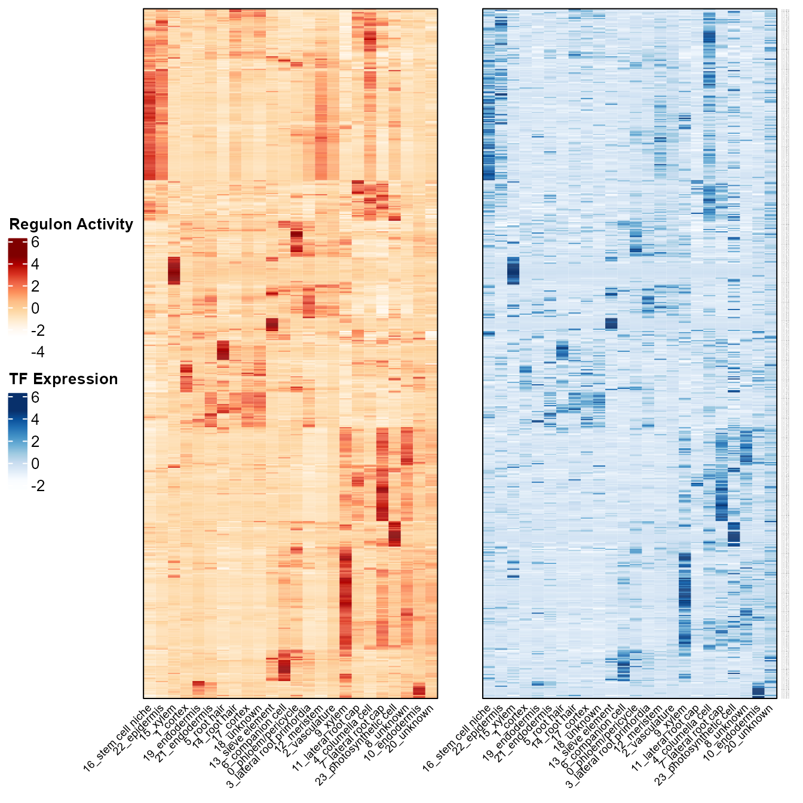
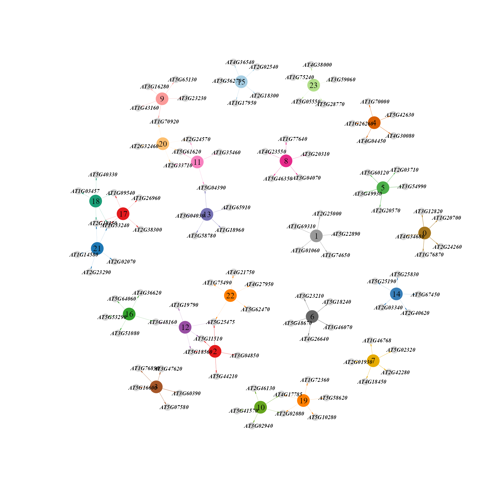
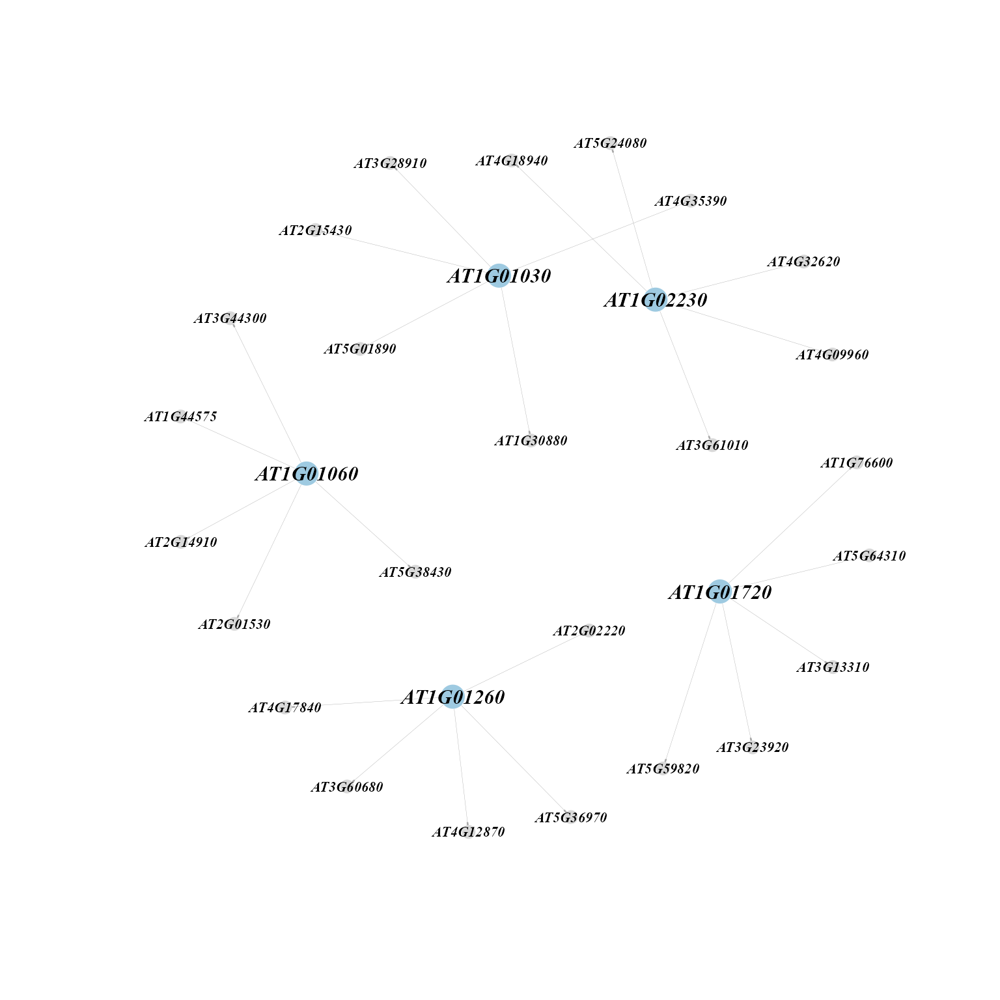

Gene regulatory network construction
2023-01-11
Source:vignettes/regulatory_network.Rmd
regulatory_network.RmdGene regulatory networks (GRNs), consisting of the interaction between transcription factors (TFs) and their target genes, orchestrate cell-specific gene expression patterns and in turn determine the function of the cell. To construct cell-type specific GRNs using single-cell data, we have incorporated the widely used single-cell GRN analysis tool SCENIC (Aibar et al., 2017) into the scPlant pipeline, and prepared required cisTarget databases in order to support SCENIC for data analysis in plants. What’s more, we have provided various visualization tools to display single-cell GRN results in different ways. Three plant species (Arabidopsis thaliana, Oryza sativa, Zea mays) are supported for now, and more plant species will be supported soon.
Download databases and scripts
The required cisTarget databases and scripts to construct gene regulatory network can be downloaded here.
# Download in linux system:
wget https://biobigdata.nju.edu.cn/scPlantDB/scPlantData.zip
unzip scPlantData.zip
cd scPlantDataWe also provide a true scRNA-seq data of Arabidopsis thaliana (Zhang et al., 2019) as example data, download here
wget https://biobigdata.nju.edu.cn/scPlantDB/SeuratObj.rdsInstallation
Install dependent Python packages
conda create -n pyscenic_12_1 python=3.7
conda activate pyscenic_12_1
pip install pyscenic==0.12.1
pyscenic -h
pip install pandas
pip install loompyInstall dependent R packages
Dependent R packages includes optparse,
Seurat, SCopeLoomR, data.table,
pbapply, philentropy, dplyr, if
you have not installed them, start “R” and enter:
install.packages("optparse")
install.packages("Seurat")
devtools::install_github("aertslab/SCopeLoomR")
install.packages("data.table")
install.packages("pbapply")
install.packages("philentropy")
install.packages("dplyr")Gene regulatory network construction
Help information:
bash RunGRN.sh -hUSAGE: RunGRN [options]
Run pyscenic and perform post-processing.
-o <output_directory> : Output directory for results.
-f <Seurat_file> : Seurat object, saved as .rds format.
-s <species> : Species. Currently At (Arabidopsis thaliana), Os (Oryza sativa), Zm (Zea mays) are supported. For other species, you need to provide your own cisTarget_databases.
-t <threads> : threads. 1 as default.
-d <cisTarget_databases> : directory containing files required to run pyscenic .Run the script
source RunGRN.sh -f SeuratObj.rds -s At -t 2 -d cisTarget_databases -o outputoutput files
Once the program has run successfully, you can find results files in the output directory. You can ignore most of the output files, because only several ones of them are needed for visualization.
ls output# finally output files
pyscenicOutput.loom # loom file containing the original expression matrix and the calculated AUC values
AUCell.txt # Regulon activity score (RAS) matrix
rasMat.rds # Regulon activity score (RAS) matrix, R object file
rssMat.rds # Regulon Specificity Score (RSS) matrix
tf_target.rds # TF and their targets in each regulon
regulons.gmt # regulons
regulons.txt # regulons
binary_mtx.txt # binary regulon activity matrix
# intermediate files
adj.tsv # a table of TF-target genes
reg.tsv # a table of enriched motifs and target genes
exprMat.loom # loom file of expression matrix
cellmeta.rds # SeuratObj@meta.data
auc_thresholds.txt # thresholds to create binary regulon activity matrixVisualize the gene regulatory network
We provide various visualization tools to display single-cell GRN results in different ways.
Load output files and Seurat object:
rasMat <- readRDS("output/rasMat.rds")
rssMat <- readRDS("output/rssMat.rds")
tf_target <- readRDS("output/tf_target.rds")
SeuratObj <- readRDS("SeuratObj.rds")Heatmaps showing mean regulon activity and TF expression of each cluster.
ras_exp_hmp(SeuratObj, rasMat, group.by = "cellType", assay = 'SCT')
Dimension reduction plot showing regulon activity and TF expression.
ras_exp_scatter(SeuratObj, rasMat, gene = 'AT1G75390', reduction = 'umap')Network diagram showing top regulons of each cluster according to regulon specificity score(RSS).
topRegulons(rssMat, topn = 5)
Network diagram showing top targets of each regulon according to importance score.
toptargets(tf_target, topn = 5, regulons = colnames(rasMat)[1:5])
Network diagram showing top targets of top regulons of each cluster.
ToptargetsofTopregulons(rssMat, tf_target, Topregulons = 5, Toptargets = 5)Dot plot showing top regulons of each cluster according to regulon specificity score(RSS).
SpecificityRank(rssMat, cluster = 23, topn = 10)